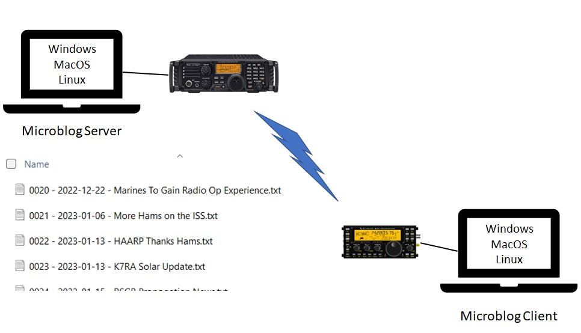
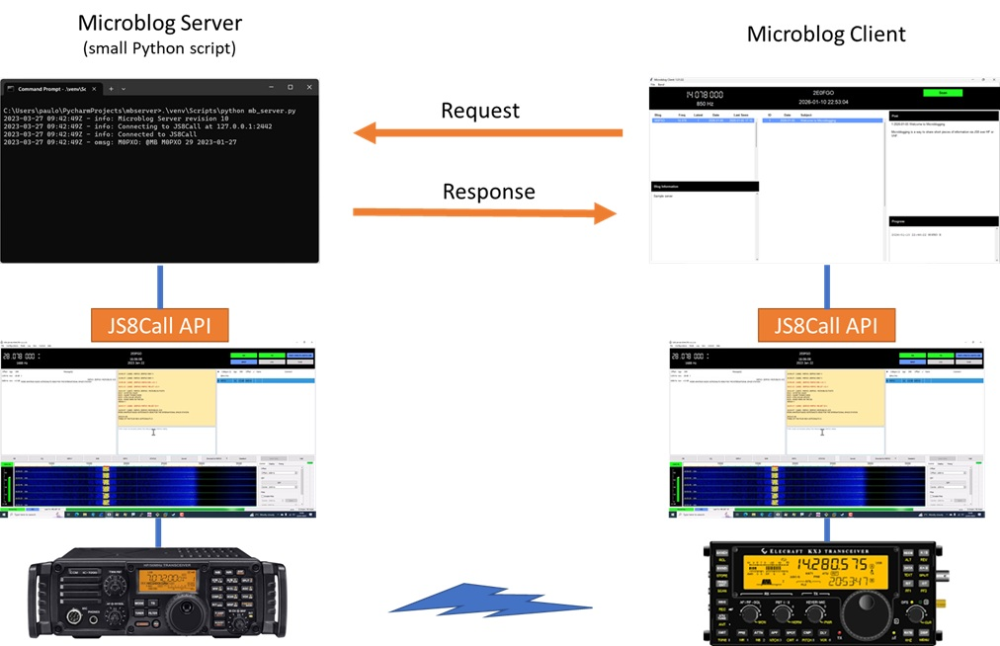
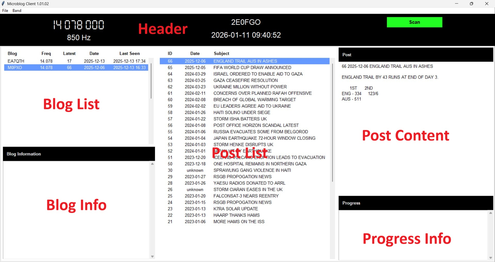
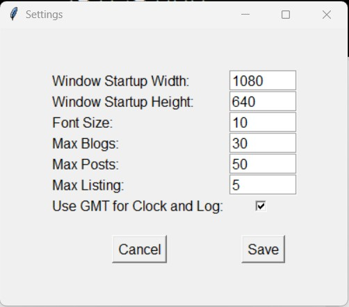
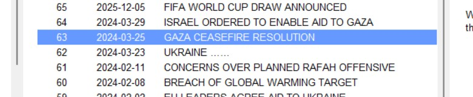
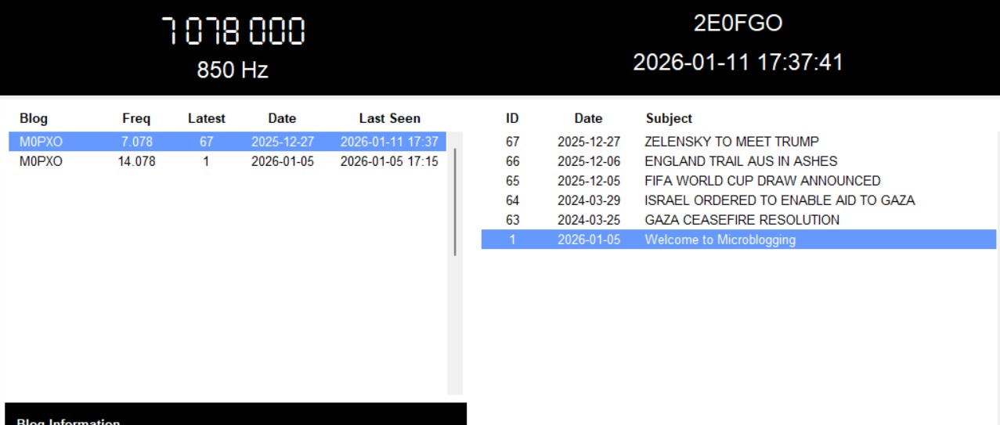
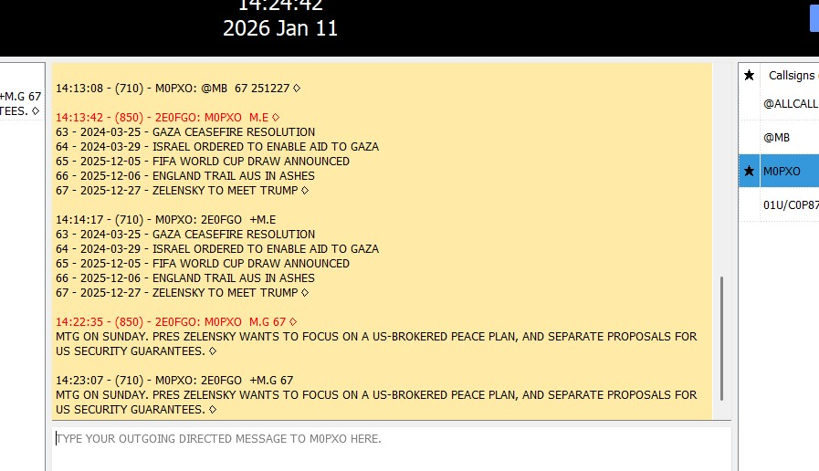
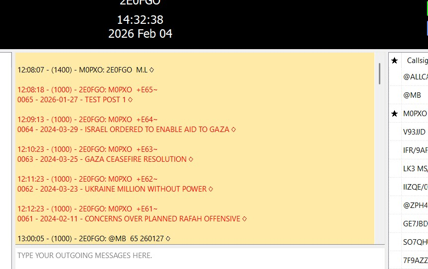
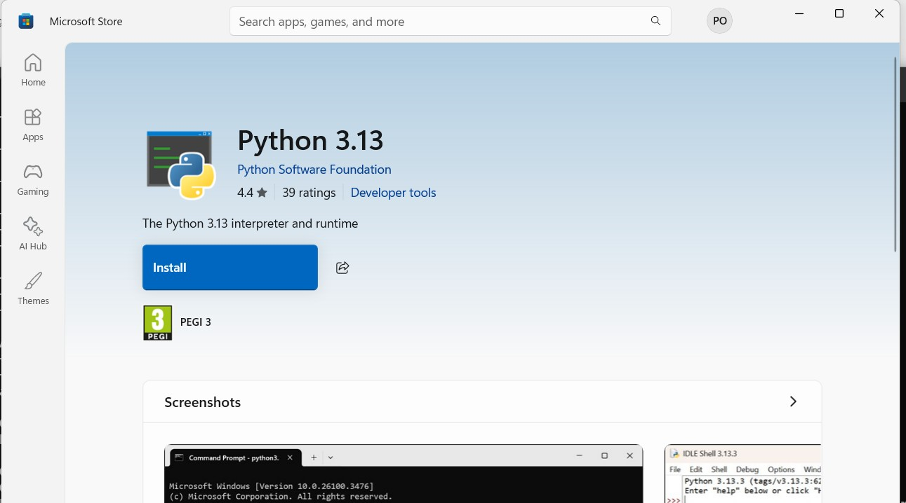

Blogging is a popular way to share information with Internet users by posting short articles in an ad hoc manner. In an emergency situation, blogging could provide a way to disseminate critical information if it weren't for the fact that Internet access is often unavailable is such situations.
The use of radio for emergency communications is well understood and, of course, is always available. JS8 is a radio data mode that works in weak signal conditions. With all the above in mind, let's move onto the concept of microblogging.

A microblog is a blog that contains small concise posts that are delivered to amateur radio operators via JS8. Although it may take 3 minutes for JS8 to deliver a microblog post, it doesn't rely on the Internet and is reliable in adverse conditions.

A microblog server is hosted on an amateur radio operator's computer and uses the JS8Call application to provide the JS8 transport mechanism. A microblog client sends requests to the mbserver which responds with the requested information.
Although you will need Internet access to install MbClient, once that's done the application can operate completely off grid. The User Guide is part of the installation package and so is always available.
A microblog post is stored as a simple text file in the server computer. The content of the text file will look something like this:
Three of the four new astronauts on February's planned launch of the SpaceX Crew-6 mission to the
International Space Station (ISS) are amateur radio operators.
Pilot Warren "Woody" Hoburg, KB3HTZ; Commander Stephen Bowen, KI5BKB, and Mission Specialist
Sultan Al Neyadi, KI5VTV, will join Mission Specialist Andrey Fedyaev on board the SpaceX Dragon
spacecraft, Endeavour.
Although we can create a post file with any content we wish, there are a few points to note:
The format of the file name is important. The file name must contain:
Here's a directory listing for the sample posts that are included in the mbserver installation package:
04/02/2023 13:05 378 0021 - 2023-01-06 - More Hams on the ISS.txt
04/02/2023 13:06 254 0022 - 2023-01-13 - HAARP Thanks Hams.txt
09/03/2023 13:34 348 0023 - 2023-01-13 - K7RA Solar Update.txt
04/02/2023 13:06 342 0024 - 2023-01-15 - RSGB Propogation News.txt
04/02/2023 13:06 369 0025 - 2023-01-20 - FalconSAT-3 Nears Reentry.txt
04/02/2023 13:06 387 0026 - 2023-01-20 - 2026 World Radiosport Team Championship News.txt
04/02/2023 13:07 249 0027 - 2023-01-22 - RSGB Propogation News.txt
04/02/2023 13:07 195 0028 - 2023-01-26 - Yaesu Radios Donated to ARRL.txt
09/03/2023 13:34 285 0029 - 2023-01-27 - RSGB Propogation News.txt
10 File(s) 3,115 bytes
2 Dir(s) 208,286,642,176 bytes free
As you can see, the Post ID is the first element of the file name (e.g. 0026). The post ID can have any number of leading zeros (or none at all). The advantage of using a consistent number of Post ID digits is that when we list the directory, we can order it by Post ID.
Next comes the Date of the post. This should be the date associated with the information, rather than the date the post was created. Notice how I created post 0028 on February 4th (my computer locale displays dates in dd/mm/yyy format) but the Post Date shows as 2023-01-26. That's because the source ARRL article was dated January 26th. Similarly, I might later edit post 0028 to correct a typo and, although the file system Modified Date will change, the Post Date will remain 2023-01-26.
Finally we have the title of the post.
The challenge for an operator running a server is to keep the post title and content as concise as possible to minimise transmission time.
To summarise:
The MbClient app has the following capabilities:
* @MB Announcement - Each microblog server periodically sends to the JS8 group @MB an announcement message containing the blog name, the latest Post ID and the latest Post Date

Before we look at how you get MbClient to do something (perform an action), let's look at the layout of the display. The window has five areas:
Navigating around the display is very simple:
* - The wording of the prompt is, "We don't have the content for this post in the cache. Click here to get it from the server."
The Tx and Rx indicators show JS8Call and radio activity. They give the operator a level of feedback so that we can see something is happening without having to switch to the JS8Call window. The Tx indicator is switched on when JS8Call is transmitting (activated Push-to-Talk). The Rx indicator flashes on for 0.5 seconds when JS8Call receives any dataframe, whether it is destined for our station or not.
As an operator, we can change several parameters through the File -> Settings menu.

Window Startup Width: The width in pixels of the client window on startup. Default - 1080
Window Startup Height: The height in pixels of the client window on startup. Default - 640
Font Size: The base font size for the text displayed in the user interface. Some text will be in a larger font than specified here (for example, header text) but this will scale with the Font Size setting. Default - 10
Max Blogs: The maximum number of blogs that will be listed in the Blog List area. These are listed in the order in which they were last seen; the latest seen blogs being at the top of the list. Default - 30
Max Posts: The maximum number of posts that will be listed in the Post List. These are listed in reverse datetime order and so older posts will eventually roll off the bottom of the list. Default - 50
Max Listing: The maximum number posts retrived each time you use Get recent or Get more. Default - 5
Use GMT for Clock and Log: Check this option if you want the clock in the user interface to show GMT (UTC) time. Uncheck this option if you want the clock to show your local time. The log messages will also obey this setting. Default - Checked
A change the settings will only take effect after restarting the MbClient.

Maybe a post in the Post Listing ends with elipses (periods) and appears incomplete (see post 62 above). In this case you will need to refresh the list entry. To do this, right-click on the list entry and choose Refresh listing.
Maybe the content of a post ends with elipses (periods) and appears incomplete. In this case you will need to refresh the post content. To do this, right-click on the post list entry and choose Refresh content.
You can still use the MbClient if you only have a receiver, or don't have an Amateur Radio license to allow you to transmit. This is what you need to do:
Because MbClient runs in a promiscuous mode, it will use any microblog information to populate its cache. As your radio receives microblog messages, you should start to see entries in the Blog List and Post List.

Imagine you have a blog that shows the latest Post ID is 67. You have no post details for this blog and so you use Get recent to get all the missing blogs. To your surprise the Post List only shows posts 63 to 67. Why did I only get details for five posts?
The number of posts received when you use Get recent or Get more is controlled by the MbClient setting Max Listing, which defaults to 5. You can increase this number but there are a few points to bear in mind:
It's better if you get five entries and then use Get more posts to populate the list further.
You can access a microblog server just using JS8Call. Simply direct your messages to the station running the server and send commands to the server.

Here are some useful commands:

Python 3 is part of the macOS installation (Big Sur and later). Python 3 is also included in most modern
Linux distributions by default. You can confirm this by opening a terminal and entering
python -V, note the option is a capital V.

Python isn't preinstalled on Windows. Open a Command Prompt and use python -V to check
if it has been installed on your PC. If it's not installed, install it from the Microsoft Store.
On Windows 11, simply enter the command python at a Command Prompt. If Python isn't installed
a window will open at the right place in the Microsoft Store.
If all else fails, see see https://www.python.org/downloads/
MbClient only uses modules included in the Python Standard Library, and so we don't need to install additional modules.
If you are a more advanced Python user and typically run an application in a dedicated virtual environment, you can do this for MbClient, although it would only be necessary if, say, your global environment is Python 2.
You can download the MbClient from a GitHub repository:
In the previous version of MbClient, you were required to run a database setup script (db_setup.py). This is no longer needed. The first time you run this version of MbClient it will create the database. If it finds an old version of the database, MbClient will create a backup and then perform a one-time conversion to a new database layout. The conversion retains the list of blogs the previous version saw, the list of posts for each blog and the content of the posts.
The default location for the database is %AppData%\MbClient and is set by the db_path variable in db_root.py. This location is appropriate for Windows and is aligned with the current standard way of storing data for personal applications. I recommend that you don't change it. The path will need to be changed for macOS and Linux as the %AppData% environment variable is invalid for those operating systems.
If you want MbClient to convert an earlier version database, once you have set the database location (db_path) in db_root.py, you should move the old database file to that location. The old database file must be called mblog.db and so rename it if needed.
To use MbClient, do the following:
python3 mb_client.py
You may want to add a .bat or shell script file to your desktop to start MbClient.